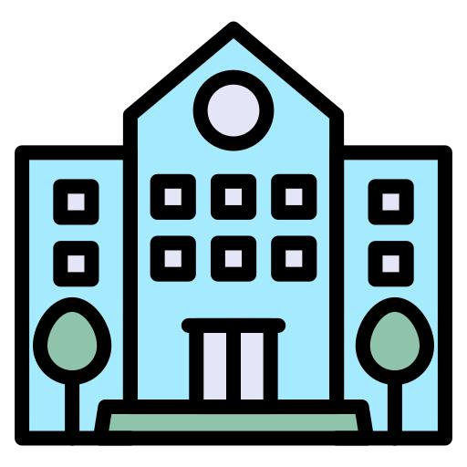
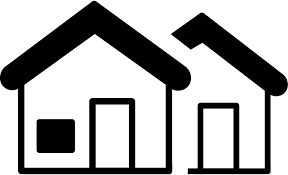

Deskripsi Peta

Universitas
Lokasi kampus sekitar area penelitian.
Rumah Sakit
Fasilitas kesehatan sekitar wilayah.
Masjid
Tempat ibadah terpetakan.

Residence
Lokasi penginapan.

Bangunan Umum
Bangunan umum di sekitar lokasi.
Lokasi
Jl. Kesehatan, Sleman, DI Yogyakarta
Metode
Data digitasi → GeoJSON → divisualisasikan menjadi WebGIS interaktif.